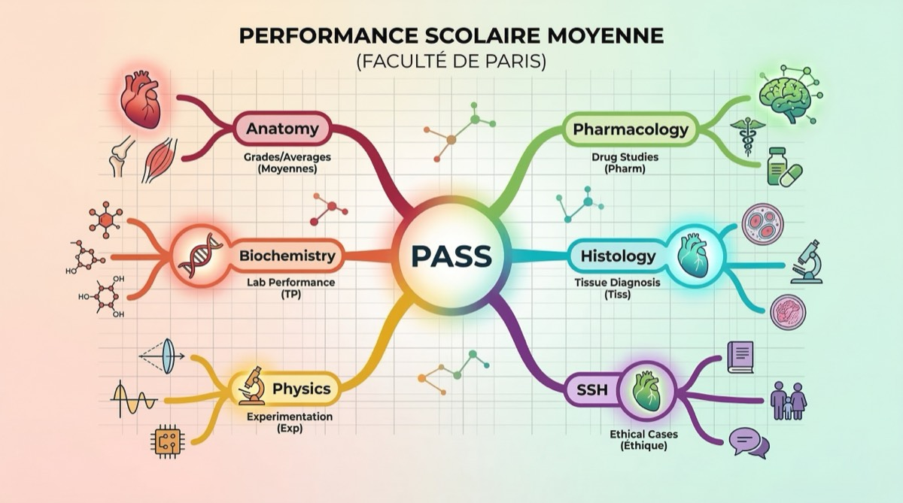

PASS/LAS Les matières en PASS et LAS : le programme complet 18 février 2026Par l'équipe AFEM  Quand tu arrives en PASS ou en LAS, tu vas découvrir un programme totalement différent de celui du lycée. Exit les dissertations de philo et les commentaires de texte : place à la biochimie, l'anatomie et la biophysique. Si tu te demandes ce qui t'attend concrètement, cet article est fait pour toi. On te détaille toutes les matières et UE (Unités d'Enseignement) du programme. Les UE du tronc commun en PASS Le PASS est composé d'un tronc commun de matières de santé, défini par le Ministère de l'Enseignement supérieur, obligatoire pour tous les étudiants. Voici les principales UE que tu retrouveras dans la majorité des facs (les intitulés exacts peuvent varier) : UE Chimie et Biochimie C'est souvent la première UE que tu découvriras. Elle couvre la chimie générale (atomes, liaisons, thermodynamique), la chimie organique (groupes fonctionnels, réactions) et la biochimie (acides aminés, protéines, enzymes, métabolisme). C'est une matière fondamentale car elle est à la base de la pharmacologie et de la physiologie. UE Biologie cellulaire et Histologie Tu vas plonger dans le monde microscopique : la cellule, ses organites, les mécanismes de division cellulaire, la signalisation intercellulaire. L'histologie te fera découvrir les différents tissus du corps humain (épithélial, conjonctif, musculaire, nerveux). Beaucoup de par cœur, mais aussi de la compréhension. UE Physique et Biophysique La bête noire de beaucoup d'étudiants. Tu y étudieras l'optique, les ondes, l'électricité, la mécanique des fluides et la radioactivité, le tout appliqué au domaine médical (imagerie, dosimétrie, biophysique sensorielle). Si tu as aimé la physique au lycée, tu auras un avantage. La biophysique est souvent la matière la plus redoutée. Mais avec une bonne méthode et des exercices réguliers, elle devient tout à fait gérable. UE Biostatistiques Les maths au service de la médecine. Tu apprendras les probabilités, les tests statistiques, l'épidémiologie, la lecture d'études cliniques. C'est une matière qui demande de la logique plutôt que du par cœur. Si tu es à l'aise en maths, c'est une UE où tu peux marquer des points facilement. UE Anatomie Le volume d'informations est énorme : os, muscles, nerfs, vaisseaux, organes de tout le corps humain. L'anatomie demande un travail de mémorisation considérable, mais c'est aussi la matière la plus « médicale » et celle qui passionne le plus d'étudiants. Des schémas annotés et de la répétition seront tes meilleurs alliés. UE Pharmacologie / Initiation aux médicaments Tu découvriras les bases de la pharmacologie : comment un médicament agit dans le corps (pharmacodynamie), comment il est absorbé et éliminé (pharmacocinétique), les grandes classes de médicaments. C'est une matière qui mobilise tes connaissances en chimie et en physiologie. UE Sciences Humaines et Sociales (SSH) Surprenant pour des études de santé ? Et pourtant, les SSH sont essentielles. Tu y étudieras l'éthique médicale, la psychologie, l'histoire de la médecine, le droit de la santé, la sociologie. C'est une matière qui peut devenir un atout stratégique : les étudiants littéraires y excellent souvent. UE Physiologie Comment fonctionne le corps humain ? La physiologie étudie les grandes fonctions : respiration, circulation, digestion, système nerveux, endocrinologie. C'est une matière passionnante qui demande à la fois compréhension et mémorisation. Retrouve nos fiches de révision par UE sur notre page Cours PASS/LAS. Elles sont rédigées par des étudiants qui ont validé leur première année. La mineure disciplinaire en PASS En plus du tronc commun santé, tu dois choisir une mineure. C'est une option disciplinaire dans un autre domaine. Les choix varient selon les facs, mais voici les plus courantes : Droit : introduction au droit, droit constitutionnel. Bonne option si tu envisages le LAS droit en cas de réorientation. Psychologie : psychologie générale, psychologie du développement. Complémentaire avec les SSH du tronc commun. SVT / Sciences de la vie : biologie animale, écologie. Dans la continuité du tronc commun santé. Chimie : approfondissement de la chimie organique et analytique. Pour ceux qui aiment la chimie. STAPS : physiologie de l'exercice, anatomie fonctionnelle. Option intéressante pour les sportifs. Pour un guide complet sur le choix de ta mineure, lis notre article Choisir sa mineure en PASS. Les matières en LAS En LAS (Licence avec Accès Santé), le programme est différent. Tu suis une licence classique (ta matière principale) à laquelle s'ajoute une option santé : La licence principale (70-80% du programme) : tu suis les cours normaux de ta licence (droit, psycho, SVT, STAPS, économie…). Tu passes les mêmes examens que les autres étudiants de cette licence. L'option santé (20-30% du programme) : tu suis en plus des cours de santé similaires au tronc commun PASS, mais en version allégée. Anatomie, physiologie, pharmacologie, SSH. L'avantage du LAS : si tu ne passes pas en santé, tu continues ta licence. Tu n'as pas perdu une année. C'est un vrai filet de sécurité. Les matières les plus difficiles selon les étudiants Chaque année, on sonde nos membres sur les matières qui leur posent le plus de problèmes. Voici le top 3 : 1. Physique / Biophysique : la matière la plus souvent citée comme la plus difficile. Les concepts sont abstraits et les exercices demandent une vraie rigueur mathématique. 2. Biostatistiques : les étudiants qui n'ont pas fait la spé maths au lycée peuvent avoir du mal. Mais avec de l'entraînement, ça vient. 3. Anatomie : pas difficile en soi, mais le volume de connaissances est gigantesque. Retenir tous les os, muscles, nerfs et vaisseaux demande un travail de mémorisation intense et régulier. Comment se préparer pendant l'été Tu veux prendre de l'avance avant la rentrée ? Voici ce qu'on te conseille : Révise les bases de chimie organique : les groupes fonctionnels, les réactions de base. Ça te fera gagner du temps au premier semestre. Commence l'anatomie : lis un atlas d'anatomie (Netter est la référence). Familiarise-toi avec les termes et les structures principales. Travaille tes maths si tu n'as pas fait la spé : les probabilités et les statistiques de base seront nécessaires pour les biostatistiques. Ne te surmène pas : l'été, c'est aussi le moment de te reposer et de recharger les batteries. 1-2h par jour de préparation légère, c'est suffisant. Les coefficients : tout ne se vaut pas En PASS comme en LAS, chaque UE a un coefficient différent. Et c'est une information stratégique cruciale : Les UE à gros coefficient (chimie, biologie cellulaire, anatomie) doivent être ta priorité absolue. Un point gagné dans ces UE vaut plus qu'un point dans une UE à petit coeff. Les SSH ont souvent un coefficient non négligeable et sont plus accessibles pour les profils littéraires. C'est une UE où tu peux créer l'écart. La mineure compte aussi dans ton classement. Ne la néglige pas sous prétexte que « c'est juste l'option ». Renseigne-toi dès la rentrée sur les coefficients de ta fac. Ça te permettra de prioriser ton travail intelligemment. Articles similaires PASS/LAS Choisir sa mineure en PASS : le guide complet Droit, psycho, SVT... Comment choisir la mineure qui te correspond ? Méthode QCM en PASS/LAS : le guide complet Stratégies, erreurs à éviter et méthodes d'entraînement pour exceller aux QCM.
PASS/LAS Choisir sa mineure en PASS : le guide complet Droit, psycho, SVT... Comment choisir la mineure qui te correspond ?
Méthode QCM en PASS/LAS : le guide complet Stratégies, erreurs à éviter et méthodes d'entraînement pour exceller aux QCM.